Headless Chrome, кадры сняты с локальной сборки: «Было» — прод до правки (файлы из HEAD), «Стало» — после. Кропы 1:1 вырезаны из одного и того же места, поэтому видно расхождения по пикселям.
Макет 2560×1440, страница целиком.
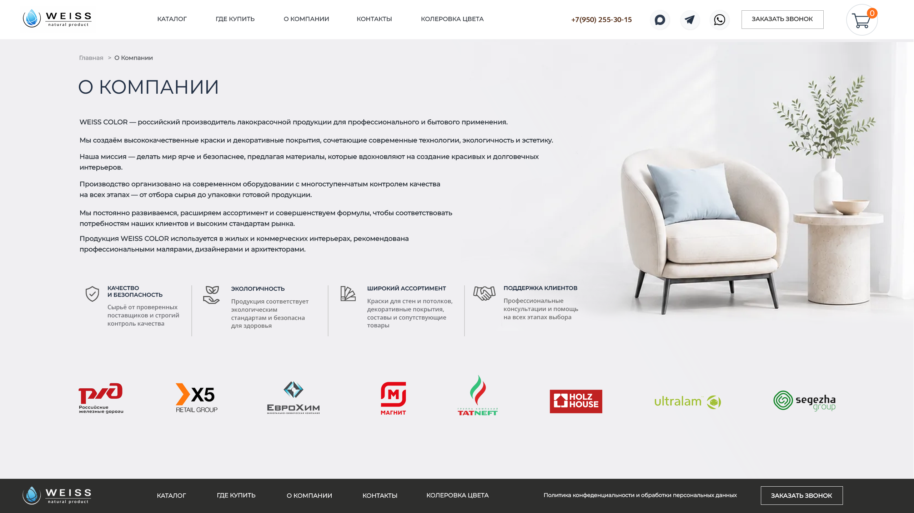
Кроп 1:1, 2560. Слева макет, справа наша страница.
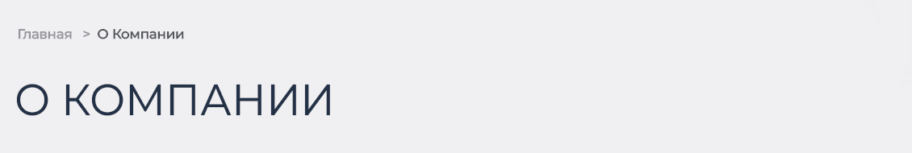
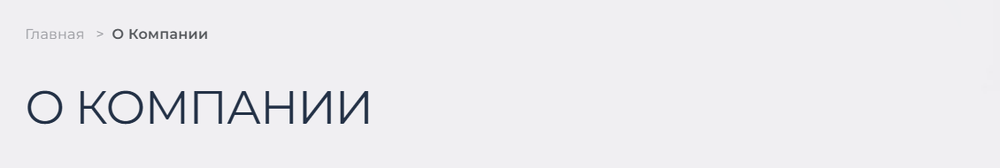
Кроп 1:1, 2560. Общий text-wrap: pretty уводил «долговечных» на вторую строку — в макете строка кончается на нём.
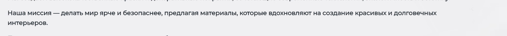
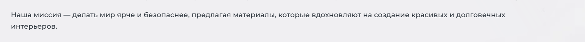
text-wrap: wrap только для этого блока.Кроп 1:1, 2560. Раньше колонки были равные (346 с зазором 32) — разделители и иконки не попадали в макет, текст стоял мельче и плотнее.
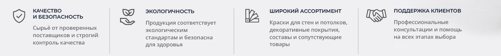
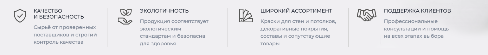
margin-top: auto: space-between после изменения высот разъезжался и уводил ряд с макетной 1052.Как видит клиент. Масштаб полотна 0,996 — это подгонка по высоте окна (общая для всего сайта), в обоих кадрах одинаковый.
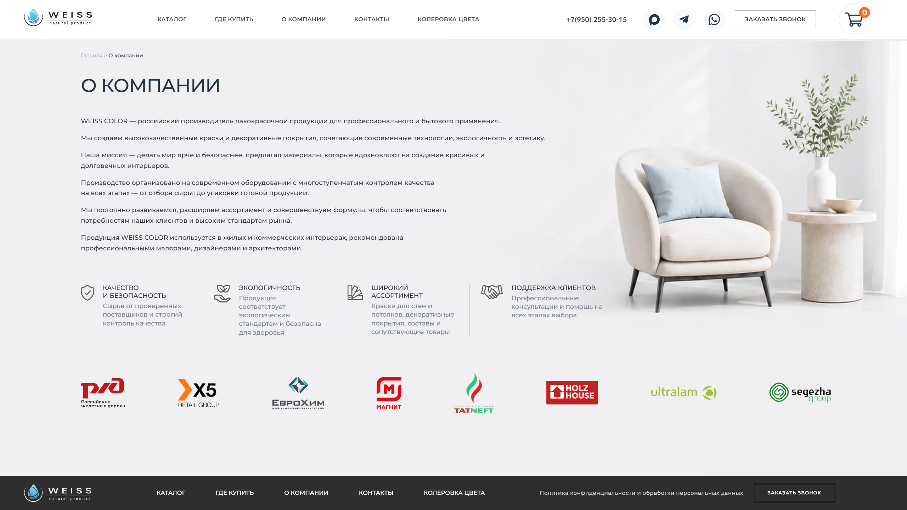
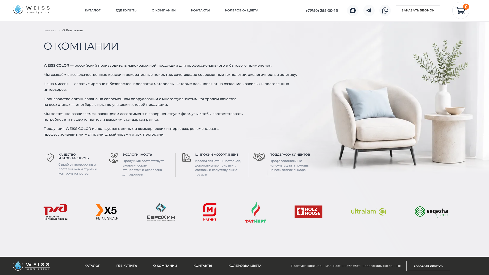
Пропорции макета сохранены: колонки, отступы и переносы масштабируются вместе с полотном.
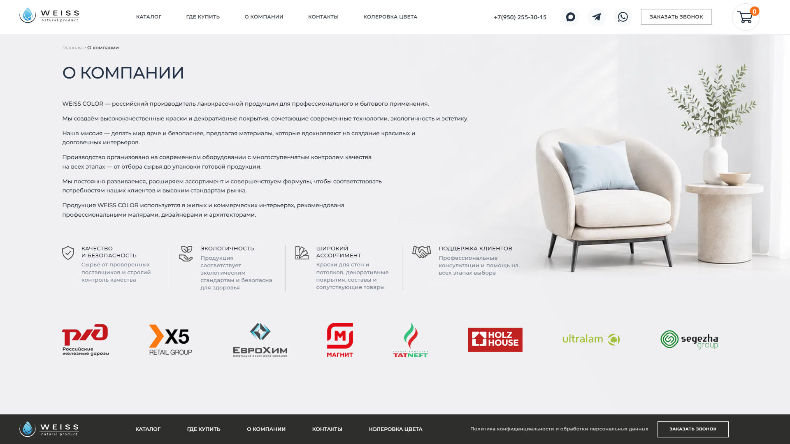
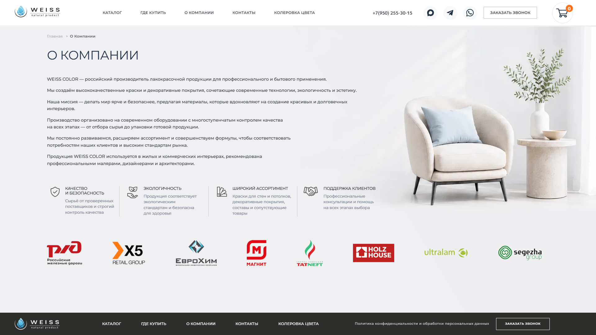
Ноутбучная ширина: жёсткие переносы макета здесь дали бы рваные строки и лишнюю высоту, поэтому ниже полотна переносы отданы браузеру, а строки остались прежней плотности.
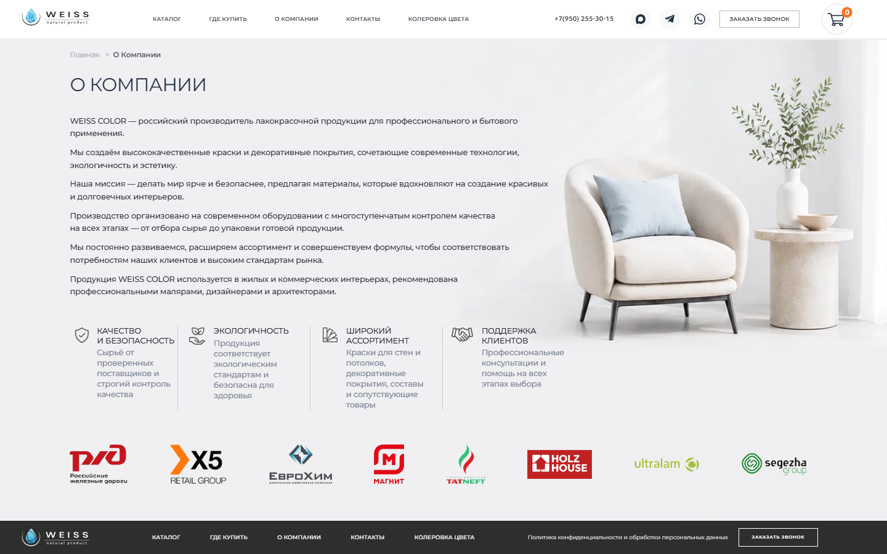
Ручные переносы макета — это <br> между словами без пробела. Там, где переносы скрыты (телефон, планшет), слова склеивались: «проверенныхпоставщиков», «качествана», «соответствоватьпотребностям». Плюс колонка вступления на телефоне сжималась до 210 px.
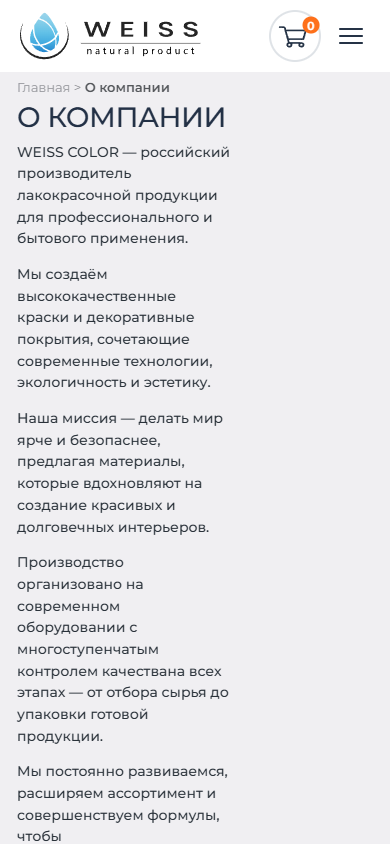
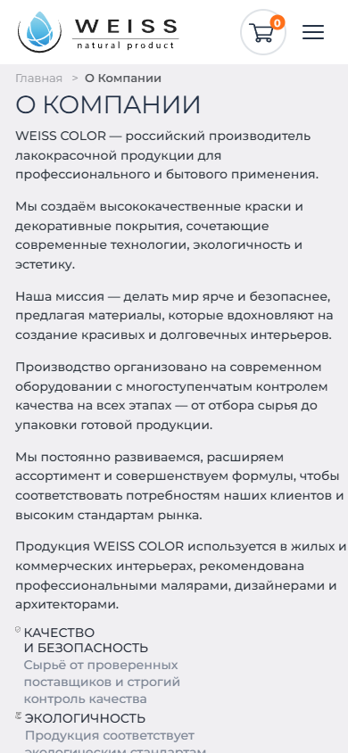
| Проверка | Результат |
|---|---|
| Макет 2560: крошки, заголовок, вступление, преимущества, логотипы | совпадает (кропы 1:1 выше) |
| Горизонтальная прокрутка 390 / 768 / 1024 / 1280 / 1440 / 1920 / 2560 | 0 px |
| Вертикальная прокрутка 1440×900, 1500×900, 1600×900, 1920×1080, 2560×1440 | 0 px (до правки на 1440–1600 скролл появлялся) |
| 1024 / 768 / 390 — карточки в 2 и 1 колонку | разделители и левый воздух сброшены, слова не склеены |
| Остальные страницы и компоненты | не затронуты: правка только в about.css и about.html |
Изменения: css/about.css — сетка преимуществ, кегли заголовка/вступления/карточек, крошки, прижатие логотипов; pages/about.html — крошки «О Компании», ручные переносы текстов карточек и пробелы после них.